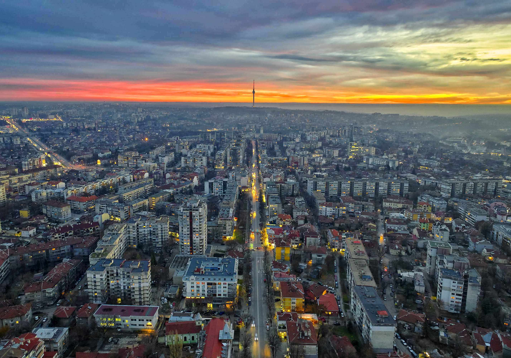

Финансова грамотност
Създател на платформа за финансова култура. Вярва, че финансовото образование е основа на гражданската свобода и личното развитие.

Знания, опит и ясна посока за Русе.
Близо 20 години международен опит в икономика, логистика и инвестиции. Завърнах се в Русе, за да работя за повече възможности, финансово образование и гражданска активност — с конкретни резултати, не само с думи.
„Истинската свобода започва с финансова независимост и граждански ангажимент."
Росен Симеонов е роден в Русе (1977 г.). Магистър по финанси от Стопанска академия „Д. А. Ценов" — Свищов и MBA от Anglia Ruskin University. Близо 20 години международен опит в логистика, инвестиции и управление на екипи. От 2022 г. живее в Русе като предприемач, инвеститор на капиталовите пазари и народен представител.
Създател на платформа за финансова култура. Вярва, че финансовото образование е основа на гражданската свобода и личното развитие.
Активна работа за инвестиции, подобрена инфраструктура и икономически растеж в Русе и Русенска област.
Организира граждански инициативи, публични дискусии и срещи с жители на Русе за активно участие в обществения живот.
Народен представител от Русенски избирателен район. Законодателна работа с фокус икономика, финанси и регионална политика.

Икономически двигател на Северна България — с правилните решения и правилните хора.
Русе може да привлича повече инвестиции и да задържа квалифицираните си хора. Нужни са конкретни мерки, не лозунги.
Финансовата грамотност и модерното образование дават на младите хора реален старт в живота и задържат таланта в региона.
По-строги правила срещу хазарта и агресивната реклама. Ясни мерки за превенция и подкрепа на уязвимите.
Русе се нуждае не само от добри управници, но и от граждани, които участват, питат и изискват отчетност.
Анализи, позиции и коментари по теми в областта на икономиката, финансовата грамотност и развитието на Русе.
Данните, причините и конкретните стъпки, които могат да променят финансовото поведение на гражданите.
ПрочетиЦифри, факти и конкретни законодателни мерки, за които се ангажирам като народен представител.
Анализ на пропуснатите възможности и реалният път напред за Русенска област.
Всяка първа събота от месеца съм на линия за жителите на Русе. Без бюрокрация.
Вестник Утро
„Политиката има смисъл само ако си сред хората." — разговор за завръщането в Русе и визията за промяна.
KISS 13
Позиция по казуса с ТИР паркинга в Русе и защита на обществения интерес с ясни правила и отчетност.
Русе Медиа
Коментар за инфраструктурните проекти в Русенска област и какво трябва да се ускори.
Дунав Мост
Питане до Министерство на транспорта относно Дунав мост 2 и свързаността на Русе с европейската мрежа.
„Не идвам с лозунги. Идвам с опит, с разбиране за реалната икономика и с ясна посока за това как Русе може да се развива по-устойчиво."
Не само политика — изграждане на по-информирана, по-активна и по-независима общност в Русе.
Хората, които разбират парите си, вземат по-добри решения — за себе си, за семейството, и за гласа си в обществото. Работя за финансово образование като системен приоритет.
Русе заслужава реален икономически ръст — инвестиции, работни места, инфраструктура и задържане на таланта.
Демокрацията работи само когато гражданите участват. Инициирам срещи, дебати и граждански действия.
Всяко гласуване, позиция и инициатива — публични и обяснени на разбираем език. Без скрити мотиви.
Решенията, взети днес, трябва да служат на следващото поколение русенци — не само на следващите избори.
Пишете ми директно. Отговарям лично или чрез екипа си в рамките на 2 работни дни. Приемен ден — всяка първа събота от месеца в Русе.